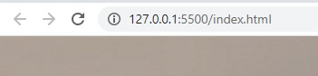

Задание: Используя фреймовую структуру создать многостраничный web-сайт для отчетов о выполнении лабораторных работ. Залить полученные документы на сервер.
Сервер. Расширение для VSCode Live Server. Это расширение предназначено для создания локального сервера, используемого в ходе разработки для размещения на нём статических и динамических страниц. Сервер поддерживает интерактивную перезагрузку страниц, которая производится после внесения изменений в код и сохранения соответствующих файлов.
